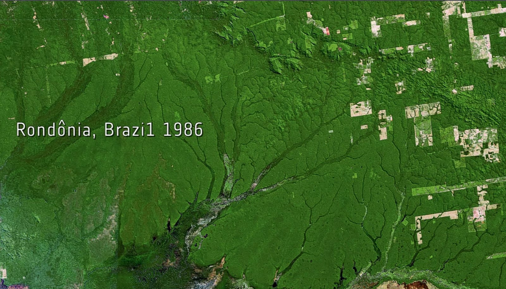

Deforestazione
Amazzonia
Prima
Il Polmone Verde della Terra
Prima dell'intensificarsi della deforestazione, l’Amazzonia era un ecosistema vasto e quasi incontaminato. Con una superficie di circa 5,5 milioni di km², ospitava più del 10% delle specie viventi conosciute sul pianeta. Gli alberi secolari creavano un tetto verde che regolava il clima globale, assorbendo miliardi di tonnellate di anidride carbonica ogni anno. Le comunità indigene vivevano in equilibrio con la foresta, utilizzandone le risorse in modo sostenibile. I fiumi erano limpidi, le piogge regolari, e la biodiversità fiorente garantiva un equilibrio naturale durato millenni. L’Amazzonia non era solo una risorsa ecologica, ma anche spirituale e culturale, un patrimonio dell’umanità di valore inestimabile.